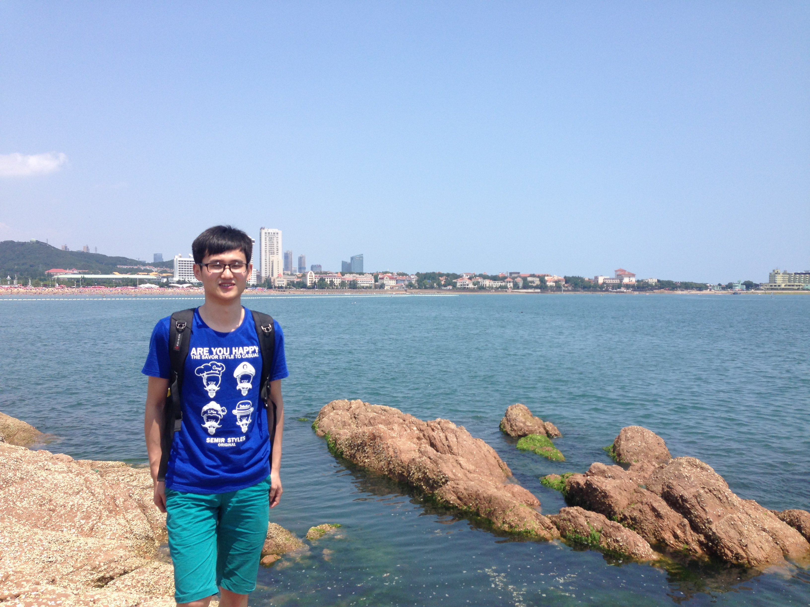
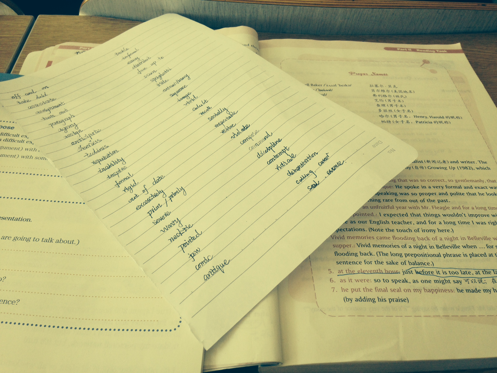

我的爱好
兴趣广泛
爱读书，爱散步，爱听歌
爱旅游，爱睡觉，爱看电影
不喜食物，不善言谈,不是屌丝
旅行的意义
旅行的意义并不是告诉别人“这里我来过”，而是一种改变。旅行改变人的气质，让人的目光变得更加长远。在旅途中，你会看到不同的人有不同的习惯，你才能了解到，并不是每个人都按照你的方式在生活。


终其一生，学无止境
读书是一种思考与认知，它并不能为你带来直接的财富提升，却能有助于你更好的了解这个世界。我们常说知识改变命运，实则是知识改变了你对整个世界的认知，对每一件事情的态度。
发现另一个世界
听别人的故事，过一次短暂，却一辈子都无法践行的别人的人生。

整体性学习
整体性学习就是看待知识的角度是多方面的。基础就是将知识关联起来以达到记忆和应用知识的目的，开始学习的最佳技术是比喻、内在化、基于流程的记事和画图表法，这些方法构成了整体性学习的基础。
获取
获取就是信息进入你的眼睛和耳朵，阅读、课堂上记笔记以及个人的种种经历都是获取。获取阶段的目标是获取的信息要准确，信息量要尽量压缩。
理解
理解就是了解信息的基本意思，并放在上下文中联系，这是学习的最基本联系。
理解
拓展阶段是整体性学习中最花力气的地方，这一步将形成模型、高速公路和广泛的联系，从而获得良好的结构。
纠错
纠错阶段是在模型和高速公路中寻找错误，这个阶段要删除那些无效的联系。
应用
应用把纠错带入最后的水平，通过比较（知识）信息是如何在现实中运行的来进行调整，如果理解不符合现实世界，那么再多也无用。在这一步中失败的典型例子就是书呆子，即那些读书读得很好但是出了学校大门却茫然不知所措的家伙。
测试
上述阶段的每一步都需要测试，测试有助于你迅速找到学习中的问题所在，帮助你改进学习技术，克服缺点。